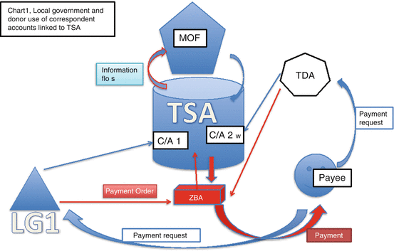

18.1 Introduction
How does one reach the extremely poor and marginal groups in countries where local politicians and officials may have little incentive to provide for them? This lack of incentive may be because these groups are minorities in these areas, either due to ethnicity, language, or caste. In other cases these groups may be predominantly women and/or children who are not be able to vote and thus exert political pressure on local politicians (e.g., in some very traditional societies).
The difficulty for a central government in reaching the extremely poor may be that it may not have adequate information on the relevant groups, and/or may have limited ability to provide benefits directly. Providing assistance through tied transfers to local governments may incur the risk that there could be a diversion of resources to other interests by local officials or politicians. In other cases, even the central government may not have the best interests of the extremely poor in mind, and external aid from foreign governments or altruistic foundations may be subject to capture and diversion at both the national and local levels of government.
Even in some of the more advanced developing countries, with the possible exception of Brazil, weak institutional arrangements and inadequate public financial management systems limit information flows regarding what is spent, by which level of government, and what the results were. Another aspect contributing to weak governance arises when local governments do not have access to adequate “own-source revenues.”1 Under such circumstances incentives to divert resources are magnified if the implementation of benefit programs for the extremely poor is handled by local governments, but higher levels of government, or donors, provide the financing.
A typical problem is when there is an altruistic benefactor, whether a central government or an external agency, that lacks adequate information on the target beneficiaries. Examples of such groups could include the Baka and other indigenous tribes of the West African rainforest, or girls and women in the northwestern regions of Pakistan. The relevant information on the target groups may be more easily available at local levels, where government officials do not necessarily assign particular importance to the marginalized or extremely poor groups. The problem can be mitigated, although not eliminated, when the vulnerable groups have a tradition of political action, or have existing legal or constitutional protection such as with the scheduled castes and scheduled tribes in India (Gajwani and Zhang 2008; Palaniswamy and Krishnan 2008).
The extremely poor or marginal groups typically do not qualify for categorical insurance-type benefits, including pensions or unemployment insurance, if they have not participated in the formal labor force. Their marginality may also constrain their ability to participate in adequately remunerated informal activities, or to have equal access to local public services, including basic health care and education. Marginalized groups often live in remote areas and/or have little education or assets (von Braun et al. 2009), which is clearly the case with the Baka tribes (World Bank 2011).
Given the importance of institutional structures and associated influence on incentives to divert resources, I focused here on a typology of options. This highlights some of the preconditions that are needed in order to provide effectively for the most marginal groups. The instruments that might be involved include a range of options, from transfers or assistance from higher levels of government (donors) translated into cash support, or the provision of public services (particularly health care and education), forms of income or employment support, to assistance for small-scale enterprises.
The alternative delivery mechanisms examined here include a spectrum ranging from:
- Direct provisions by local governments with their own resources—this generally works best if the local governments are interested in the welfare of the marginal groups, which may not be the case
- Provisions by local governments with earmarked financing from higher levels of government or donors—this may involve more or less conditionality on the processes and procedures to reach the target groups
- Direct provision by the central government and parallel provision by donors/NGOs
18.2 Better Governance and Incentive Structures—Hard Budget Constraints
Well-meaning assistance for the marginalized groups, either from a central government or external donors, without proper attention to the overall institutional framework and fiscal instruments may reduce incentives for efficient provision and worsen existing governance structures. It may also reduce the political discipline that comes through operating under hard budget constraints. In this section I focus on the overall institutional and fiscal framework. I also address the interactions between instruments, particularly social provision and financing mechanisms. The overall effectiveness relies on complete and accurate information, effective governance, and accountability.
18.2.1 Fiscal Instruments and Preferences
Donors, including international agencies and political activists, are increasingly trying to hold local or subnational governments accountable for the effective delivery of public services—be those basic health care or primary education of marginalized groups, or the effective implementation of targeted public works programs [like the Indian National Rural Employment Guarantee (NREGA)]. The difficulty in many cases is that it is not clear which level of government holds the functional responsibility and whether this level has control over all the needed economic inputs (e.g., employees, wages, operations, maintenance, capital spending) that translate into programs or sub-programs that can be assessed, such that the cost-effectiveness of the performance might be measured. Focusing solely on outcomes is not sufficient in terms of assigning responsibility and achieving cost-effective operations.
Typically, as in countries as diverse as Bolivia and Cameroon, or even in Pakistan,2 local governments do not have full responsibility over program functions or sub-functions. This translates into inadequate control over the economic categories—wages and salaries, hiring and firing decisions—related to the devolved functional responsibilities (e.g., basic education). Yet specific health programs or activities such as building schools are often assigned to local governments that do not have the full associated economic or functional responsibility. For example in Cameroon (World Bank 2011) recent attempts to make municipal governments responsible for the construction of additional schools or clinics, without the corresponding responsibility for providing primary education or basic health care services, make it easy for the local government to evade responsibility or accountability for outcomes. It is quite easy to blame another level of government for the lack of teachers or health care personnel. A system of overlapping responsibilities cannot be easily overcome through social action or political sanctions for nonperformance.
The linkages between functions and how these might be implemented are seen in representations of the typical classification of the budget process (see Table 18.1), depicting the intersection between functions and sub-functions (rows), and the inputs classified by economic categories and administrative arrangements (columns). The responsibilities of lower levels of government appear in designated cells, but not along the rows (functions) or the columns (economic or administrative categories). With this pattern of responsibility, it is hard for an electorate to hold government responsible for the provision of basic health care, primary education, or even potable water and sanitation services.3 In the cases presented in Table 18.1, the municipal government would be responsible for the construction of a school or clinic without having full responsibility for providing the primary education or basic preventive care function or sub-function. This makes it easy for the local government to evade responsibility or accountability for outcomes—as it is quite easy to blame another level of government for the lack of teachers or health care personnel.
Table 18.1
Typical sub-national spending assignments by functions and economic categories as well as administrative arrangements
Economic classification | Administrative classification | ||||
|---|---|---|---|---|---|
Functions | Wages | Other current | Capital | Other economic categories | Central departments/municipal |
Education | |||||
Primary | CCCC | CCCCC | CCCC M | CCCCC | CCCCC M |
Secondary | CCCC | CCCCC | CCCC | CCCCC | CCCCC |
Health care | |||||
Basic care clinics | CCCC | CCCCC | CCCC M | CCCC | CCCCCC M |
Water | CCCC | CCCCC | CCCC M | CCCC | CCCCC M |
Sanitation | CCCC | CCCCC | CCCC M | CCCC | CCCCC M |
18.2.2 Financing
At the margin, financing mechanisms also matter—both regarding bases over which the local government has some control (the own-source revenues mentioned below), the design of transfers from higher levels of government, as well as access to credit. Poor design in one or more of the dimensions can override any clarification of spending responsibilities, underlining the importance of interactions across instruments. The lack of accountability at subnational levels often mirrors that found at the national level (e.g., for countries such as Pakistan). Jurisdictions can become accustomed to relying on transfers and capital inflows, with little incentive to use the tax handles that may be available to meet their responsibilities and particularly to deal with deficits.
18.2.2.1 Own Taxes
From a political economy perspective, the use of own taxes at the margin is critical for ensuring that the electorates of a locality, region, or country hold governments responsible for their spending. It is through the need to raise additional revenues to meet spending needs that there is a clearer political linkage between spending and financing. This is clearest in the case of debt incurred. Without the ability to raise additional revenues in order to meet future repayments and liabilities, a local government is able to pass liability on to the central or other government levels and related sanctions are just not credible (Ambrosiano and Bordignon 2006). In such cases there are no hard budget constraints or accountability for spending.
Typically in developing countries there has been relatively little focus on designing adequate sources of subnational own-source revenues (see Ahmad and Brosio 2006, 2009 for a discussion of developing countries). Split bases, such as the Goods and Services Tax on services in Pakistan are not generally workable, as the crediting and refunding mechanisms are difficult to handle by subnational governments without central coordination and multiple rates make the system even more complex and open up the possibility of tax wars (Ahmad 2010). Alternatives include dual Value Added Taxes4 (Bird 2010)—without the establishment of complex administrations—giving some control to local authorities.
At the local or municipal level, property or land taxes are suitable handles to generate accountability, but the implementation is patchy (see Ahmad and Brosio 2009 for a review in Latin America). It should be stressed that control over tax rates or bases does not require that each level of government establish its own tax administration. All that is required is that the local jurisdiction be able principally to set its own tax rates.5
Another alternative is to consider piggybacked income taxes that would also operate with a single administration. However, this will tend to provide more revenues to the richest localities, and needs to be supplemented by equalization mechanisms to permit local governments to be able to provide similar levels of public services at similar levels of tax effort.
18.2.2.2 Shared Taxes
Tax sharing is quite common and often helps with overall financing needs. Tax sharing may also be needed for political economy purposes, especially in natural resource sectors, to prevent centrifugal forces and to help pacify separatist tendencies—as in the case of the sharing of forestry revenues in Cameroon (Morrison et al. 2009; Oyono et al. 2009; Cerutti et al. 2010; Pye-Smith 2010). However, such tax sharing does not constitute own-source revenues, as additional revenues cannot be generated independently if needed and it does not promote more efficient governance. Further, tax sharing does little to support incentives to provide for minorities, such as the Baka. In this regard tax-sharing revenues are very much like untied transfers, which are described below.
18.2.2.3 Transfer Design—Gap Filling Fiscal Dentistry?
Deficit-filling transfers negate a recipient jurisdiction’s incentives to use own-source revenue handles. If deficits are automatically met from higher levels or donors, as was widespread in the Indian subcontinent (see Rao 1998, who referred to this phenomenon as fiscal dentistry), there can be little accountability or efficiency in spending on or targeting vulnerable groups. It can be dangerous when central governments play this game, as has been the case in Pakistan over the past couple of decades, given its periodic strategic importance. This has led to psychological dependency, poor governance, and aversion to paying taxes (Ahmad 2010). External assistance, including for humanitarian purposes, has reinforced these tendencies.
18.2.2.4 Equalization Transfers
Equalization or untied transfers help to meet local government preferences, without discriminating against regions with low revenue potential or distorting incentives. Such transfers are desirable in order to supplement own-source revenues, which may be largely concentrated in the richer areas with more significant revenue bases and are generally quite disequalizing. But will the local politicians have the incentive to provide for the marginal groups in the presence of equalization transfers? The short answer is that local governments will probably not provide for such groups out of untied resources, and that is one of the contributing factors to marginality problems.
18.2.2.5 Earmarked Transfers
Earmarked transfers are often recommended to meet the objectives of donors or the central government, specifying conditions that must be fulfilled in order to benefit from the funds. In some cases, co-financing requirements are also specified. However, this discriminates against the poorest regions that may not be able to collect the transfers due to lower than average tax-raising capacity.
With poor information flows on how funds are allocated or accounted for and the more complex requirements on the outcomes of the spending, the possibility for a diversion of resources is higher. In the absence of proper benchmarks on spending and costs across regions and local governments, even social action and the mobilization of public opinion (as is being attempted in relation to the Indian public works program NREGA in several states) may not be sufficient.
Given that results-based budgeting is an advanced institutional arrangement that operates mainly in developed countries, withholding funds until the results are demonstrated—the approach now being tried by development partners such as the UK’s DFID in some countries—may be quite unrealistic. The sanction of withholding funds in future years may work for investment spending in a repeated games context—if there is both horizontal and inter-temporal competition for funds (Ahmad 2009). However, for basic health care or education services for the most vulnerable the sanction of withholding funds in future years may not be credible.
18.2.2.6 Tracking the Funds and Establishing Hard Budget Constraints
The effectiveness of provision depends crucially on incentives that the providers may or may not have to actually spend the funding efficiently and towards the desired objectives. This depends, as argued above, on some clarity in terms of what these objectives and responsibilities might be—especially the functional responsibilities and associated economic components. Tracking these systematically is critical and a weakness of governance in many countries. The IMF’s Government Financial Statistics Manual 2001 and the UN’s Classification of the Functions of Government (COFOG) are essential standards in terms of budgeting, charting of accounts, and tracking spending.
Tracking funds is also critical, and a typical mechanism used for this purpose is a Treasury Single Account (TSA)—which consolidates all the government’s cash and provides a trail of how the funds are disbursed and to whom. If there are lots of pots of funds in different bank accounts of various agencies, or donor tracking becomes too difficult, the government loses sight of what is being spent for which public objective.
Donors frequently do not trust national government budgeting systems and prefer to establish their own fund allocation mechanisms, as well as associated bank accounts. This situation has been particularly chaotic in Afghanistan, and has led to difficulties in other countries as distinct as Bolivia and Timor-Leste. The absence of complete information on the funds available also makes it very difficult to initiate social action on the use of funds or to allow the operation of the discipline of yardstick competition.
It is possible to use a modified TSA concept for improving the tracking of spending, especially for lower levels of government and donor agencies. This involves funds flowing into special “correspondent accounts” within the TSA for local governments and specific donors. The treasury then stipulates spending limits for zero-balance accounts in the name of the donor or local government—these accounts continue to operate such as before—but the funds only flow overnight and there are no outstanding balances in these accounts. This provides the government with complete information on spending, as well as more efficient financial management. The donors and local governments operate with their own procedures and safeguards. Figure 18.1 illustrates a simple correspondent account system within a national TSA, serving both a hypothetical local government (LG1) and donor agency (TDA).

Fig. 18.1
Local government and donor use of correspondent accounts linked to a Treasury Single Account. LG1 is a local government, TDA is a typical donor agency, C/A is a correspondent account within the TSA, and ZBA is a zero-balance account in a commercial bank, which can be operated by either the local government or donor. The ministry of finance (MOF) or treasury establishes spending limits for the ZBA as a function of local government revenues received, or funds provided by the donor, permitting the local government or TDA to draw from the ZBA up to this amount. All information for spending is transmitted through the TSA to the MOF, which is able to produce timely reports on what has actually been spent and for what purpose (Provided that standard formats and classifications are followed)
The main advantage of the modified TSA arrangement for local governments is the timely and verified generation of complete information on spending for each local government entity on a consistent basis, facilitating effective cash management and creating an electronic trail of payments made. Often as in Cameroon and indeed Mexico (which also does not use a TSA—see Ahmad in process), and with disparate and varying standards for budget classification and reporting in different jurisdictions, the consolidated accounts of local governments are only available with a considerable lag time of 3 years or more, and are generally not comparable across local governments.
Without basic information on economic and functional classifications as well as the TSA, it is very difficult to generate accurate and standardized information on who spends what amount and for what purpose or when. The question of what actually happens to the money and how effectively it results in improvements in living standards or health outcomes is a subsequent and more difficult stage that presupposes that information on the basic inputs and outputs is available and that standard cost-effectiveness assessments are possible. For social action in the manner being attempted for NREGA, or yardstick competition, both sets of information are needed. Reliance by donors solely on evaluation of outcomes is likely to be unrealistic when basic spending information is not available.
Arrears and the buildup of debt liabilities are also mechanisms that are guaranteed to lead to inefficient outcomes at the local level. In this manner the local administrations are able to shift their liabilities on to future generations, the central government, donors, or to other jurisdictions. The inter-linkages between policy instruments are most clearly defined in this case. Without clarity on spending responsibilities, as well as access to own-source revenues, sanctions on local governments for nonperformance or breach of debt limits are not likely to be credible.
18.3 Decentralized Provision and Political Economy
If the transfer or funds made available for a particular purpose are of a “one-time” nature, the possibility of capture by local vested interests becomes quite acute, especially if there are broad disbursements and influence, and the intended marginalized beneficiaries have relatively little voice in local government operations (Bardhan 2006). Repeated targeted transfers also run the risk of being either being appropriated by local officials or used by donor governments for political purposes, resulting in what is now being increasingly recognized as “clientelism,” especially if the information on who spends what and for what purpose is hard to attain.
The design of some recent social protection schemes in Latin America originated in categorical targeting requiring minimal information—attendance in schools and maternity clinics. This was part of the original design of Mexico’s Progresa/Oportunidades program that is considered to be the prototype of successful conditional cash transfers (Coady and Harris 2001).6 Applications elsewhere have begun to focus on asset and income tests that are harder to combine, and that may generate additional disincentives.
In a multi-year context, a repeated-games framework would permit the operation of competition for funds across local governments, especially for physical investments and where the sanction to withhold future funds is credible (Ahmad 2009). This form of clientelism may occur with the more complex and information intensive conditional cash transfers, as seen in the Indian subcontinent. In principle, reaching the poor by offering limited financial incentives and requiring a person’s time are better categorical targeting mechanisms. However, financing from higher levels together with poor information flows may contribute to the difficulties of effective targeting with the Indian NREGA and the social action campaigns being launched may lack the informational basis to be truly effective.
18.4 Concluding Remarks
In the absence of genuine local interest in providing for the marginalized and extremely poor, direct provision of funding by central governments and aid agencies appears to be the only feasible option, which may be reflected by the increasing popularity of centrally sourced conditional cash transfers, such as the Oportunidades program in Mexico or the Bolsa project in Brazil. In the Brazilian case, there is adequate generation of basic information on a standardized basis, but that is not the case in Mexico (or Pakistan for that matter, see Ahmad in process). In such cases using simple categorical targeting mechanisms, women through clinics or girls’ through schools, as vehicles for targeting may be more effective. Similarly public works with limited financial incentives (based on the 1970s Maharashtra model, see Agarwal 1991) could be an alternative, especially if the community and the targeted marginalized groups are able to identify the areas where public works may be most useful.
In the final analysis the difficulty lies with incomplete information on need and on the actual spending that is available to central governments and donors. Local governments may have better knowledge about need, but may lack the incentives to provide for the marginalized or extremely poor, and indeed may use the lack of basic information to divert resources. While much depends on individual circumstances and institutional arrangements available, in all cases the incentive structures are important and the interplay between policy instruments needs to be kept in mind. Above all the basic building blocks for good governance, the ability to track the funds, and the outcomes of public spending remain as important as individual interventions.
References
Agarwal B (1991) Social security and the family: coping with seasonality and calamity in rural India. In: Ahmad E, Drèze J, Hills J, Sen A (eds) Social security in developing countries. Clarendon, Oxford, pp 171–246CrossRef
Ahmad E (2009) The political economy of designing programs to reach the poorest. In: von Braun J, Hill RV, Pandya-Lorch R (eds) The poorest and hungry: assessments, analyses, and actions. International Food Policy Research Institute, Washington, DC, pp 237–252
Ahmad E (2010) The political economy of tax reforms in Pakistan, ZEF discussion paper 142. Center for Development Research, University of Bonn, Bonn
Ahmad E (in process) Governance and institutions. In: Ahmad E, Brosio G (eds) Handbook of fiscal federalism II. Edward Elgar, Cheltenham
Ahmad E, Brosio G (eds) (2006) Handbook of fiscal federalism. Edward Elgar, Cheltenham
Ahmad E, Brosio G (2009) The political economy of multi-level tax assignments in Latin America. National Tax Association, Columbus, pp 191–215
Ambrosiano F, Bordignon M (2006) Positive and normative theories of revenue assignments. In: Ahmad E, Brosio G (eds) Handbook of fiscal federalism. Edward Elgar, Cheltenham, pp 306–338
Bardhan P (2006) Decentralization and development. In: Ahmad E, Brosio G (eds) Handbook of fiscal federalism. Edward Elgar, Cheltenham, pp 201–223
Bird R (2010) Central and subnational VATs in federal countries. In: Ahmad E, Al Faris A (eds) Fiscal reforms in the Middle East. Edward Elgar, Cheltenham, pp 38–75
Cerutti P, Lescuyer G, Assembe-Mvondo S, Tacconi L (2010) The challenges of redistributing forest-related monetary benefits to local governments: a decade of logging area fees in Cameroon. Int For Rev 12(2):130–138
Coady DP, Harris RL (2001) A regional general-equilibrium analysis of the welfare impact of cash transfers: an analysis of Progresa in Mexico. International Food Policy Research Institute, Washington, DC
Gajwani K, Zhang X (2008) Gender, caste, and public goods provision in Indian village governments, IFPRI discussion paper no 807. International Food Policy Research Institute, Washington, DC
IMF (2001) Government fiscal statistics manual 2001. International Monetary Fund, Washington, DC
Levy S (2008) Good intentions, bad outcomes. Brookings Institution, Washington, DC
Morrison K, Cerruti PO, Oyono PR, Stiel M (2009) Broken promises: forestry revenue-sharing in Cameroon. World Resources Institute, Washington, DC
Oyono PR, Cerutti PO, Morrison K (2009) Forest information and governance in Central Africa. Center for International Forestry Research and World Resources Institute, Washington, DC
Palaniswamy N, Krishnan N (2008) Local politics, political institutions and public resource allocation, IFPRI discussion paper no 834. International Food Policy Research Institute, Washington, DC
Pye-Smith C (2010) Cameroon’s hidden harvest. Center for International Forestry Research, Bogor
Rao G (1998) Intergovernmental transfers in India. In: Ahmad E (ed) Financing decentralized expenditures. Edward Elgar, Cheltenham, pp 234–266
von Braun J, Hill RV, Pandya-Lorch R (2009) The poorest and the hungry: a synthesis of analyses and actions. In: von Braun J, Hill RV, Pandya-Lorch R (eds) The poorest and hungry: assessments, analyses, and actions. International Food Policy Research Institute, Washington, DC, pp 1–61
World Bank (2011) Cameroon: the path to decentralization, democracy, development and good governance, Report no 63369-CM. World Bank, Washington, DC
Footnotes
1
This is defined as some control over revenues at the margin (more likely with respect to the rate structure than the base). It does not follow that the need for local own-revenues implies that there should be local administration, indeed even for local property taxes. The cadastre may have to be kept at higher levels to minimize the incentives to discriminate against the local authorities opponents.
2
During the 2001–2007 period devolution to districts was attempted by the Musharraf administration in Pakistan, but central control was strengthened by a weakening of political parties at the provincial level.
3
For a description of the internationally accepted standard for the full structure of the economic classification system, see IMF (2001) and the UN’s COFOG for the functional classification. The latter tends to correspond to functions or sub-functions for health care or basic education.
4
Typically these involve joint occupancy of the same base, with separate tax rate setting powers. This does not always involve separate administrations.
5
In unitary states this may involve setting rates within a band legislated at a higher level. In Mexico, although the constitution is federal with respect to the federal government and the states; the states and local municipal governments have limited jurisdictional authority and intrastate operations are effectively unitary.